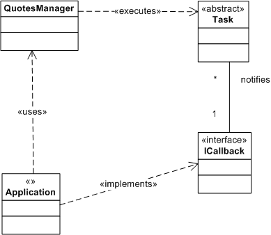
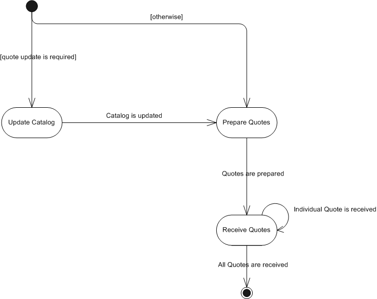

How does Quotes Manager Work (Programming Logic)?
Brief
The article describes basic concepts on how Quotes Manager operations are handled.
Details
Each Quotes Manager operation is a task that is executes asynchronously, i.e. when the application "executes" a task, it only starts the execution, not executes the task completely.
In order to get the result of the task, the application must provide a callback - an implementation of the interface, which will be called when the task execution is finished successfully or is failed.
Please note that the callback most probably will be called from a different thread than the thread in which the task execution is requested.

As the most common operation of the Quotes Manager (get quotes) requires from 2 to 3 tasks (update the quotes catalog if it is required, prepare quotes and then receive quotes), the application logic must be implemented in the form of a state machine:
